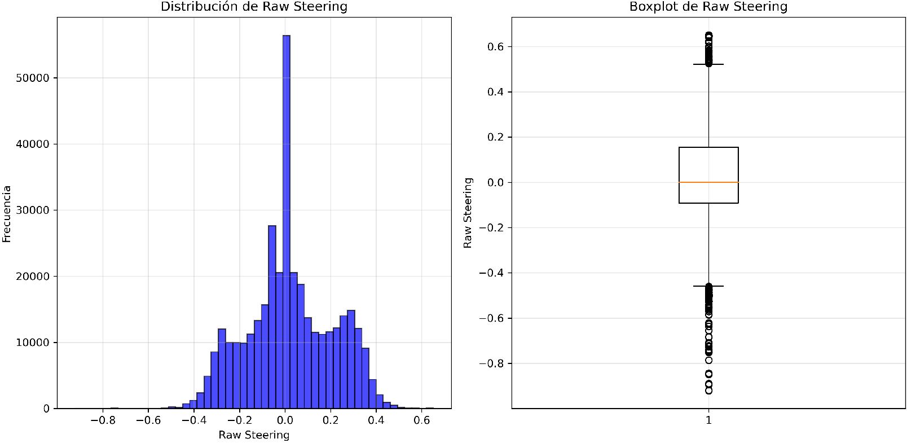
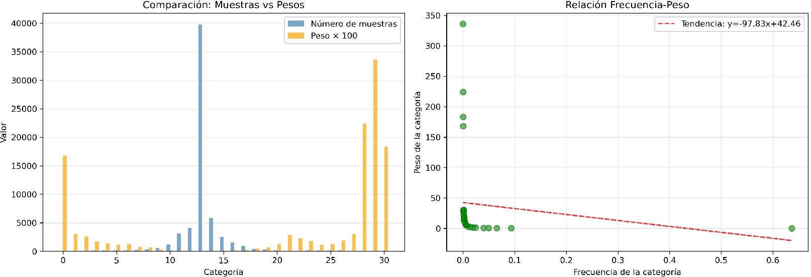
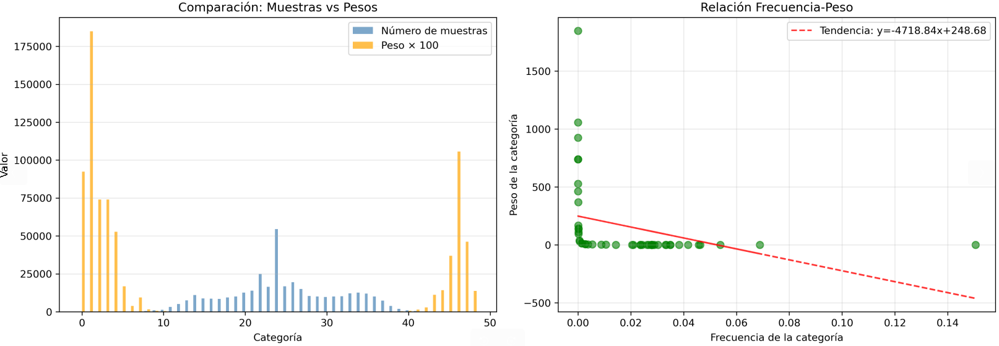

Evaluation of Smooth Driving Datasets in CARLA Towns 07 and 12
March 13, 2026
Analysis of two dataset construction approaches for imitation learning: balanced curves-only vs. augmented dataset including recovery examples
Following the systematic balancing study reported in Week 22, this week we initiated the construction of a new dataset focused on smooth routes in CARLA Towns 07 and 12. Two distinct approaches were developed and evaluated using a fixed architecture. This report details the dataset compositions, the behavioural outcomes of the trained agents, and outlines the next steps to improve performance, particularly the inclusion of DAgger recovery examples.
1. First Approach: Smooth Curves Only (Towns 07 & 12)
The initial dataset was composed exclusively of smooth driving segments from Town 07 and Town 12. The original distribution was heavily imbalanced towards straight driving. To address this, a weighted balancing technique was applied.

Figure 1: Original composition of dataset (only Town 07 & 12 smooth driving).

Figure 2: Dataset after weighted balancing.
Behavioural Characteristics of the Agent:
✅ Centred driving without corrections (stable on straight sections).
❌ No recognition of smooth or sharp curves — the agent fails to turn.
Interpretation: The model learned to drive straight but failed to generalise to any steering angle > 0°. Weighted balancing alone, without sufficient examples of turning manoeuvres, is insufficient for curve negotiation.
2. Second Approach: Augment Week 12 Dataset with New Town07/Town12 Data
The second approach combined the previous dataset (which already included some curves) with new images from Town 07 and Town 12. The goal was to increase the diversity of turning examples while retaining the original data.

Figure 3: Composition of augmented dataset (previous curves dataset + new Town07/Town12 images).
Behavioural Characteristics of the Agent:
✅ Centred driving without corrections.
⚠️ Smooth turns are performed, but the system still gets confused and occasionally generates strong steering commands.
This approach lacks DAgger (Dataset Aggregation) examples for lane recovery. The agent was never trained on how to return to the lane centre when it drifts, which explains the intermittent confusion and strong corrections.
3. Discussion: Placing Results in Context of Week 22
The Week 22 study demonstrated that removing temporal redundancy (1 s frame margin) eliminated oscillatory zigzag. Both Week 24 approaches benefited from that finding — agents show stable straight-line driving. However, the new瓶颈 is curve handling and intersection awareness.
Comparison of the two approaches
Approach 1 (curves only, balanced): Straight driving is perfect, but curves are completely ignored. This suggests the balancing weight gave too much importance to straight examples, or the network failed to extract relevant features for steering.
Approach 2 (augmented): Some turning capability emerges, but the model is brittle — it produces both smooth and excessively sharp steering. The absence of recovery data (DAgger) means the agent never learns to correct its mistakes, leading to compounding errors.
Compared to Week 22 PilotNet results (which handled smooth turns robustly), these models underperform. A key difference is the training environment (Town04 vs Towns 07/12) and the lack of diverse turn radii in the new datasets.
4. Immediate Next Steps (Actions to Follow)
Implement DAgger: Collect recovery examples when the vehicle deviates from the lane centre. This will teach the agent how to return to the desired path, addressing the confusion observed in Approach 2.
Refine the dataset:
Include a wider variety of curve radii (both smooth and sharp) in Towns 07 and 12.
Add intersection examples with clear turning manoeuvres.
Maintain the 1 s frame margin to avoid temporal redundancy.
Increase dataset size: Based on Week 22 observations, MobileNet may require ~600k samples to outperform PilotNet. Currently, our dataset is below that threshold.
Multi‑scenario testing: Evaluate on multiple routes within Towns 07 and 12 to verify generalisation.
The inclusion of DAgger is expected to significantly reduce the occurrence of erratic steering commands by providing on-policy correction data.
5. Conclusions
Building a dataset exclusively from smooth curves (even with balancing) leads to an agent that ignores turns — curves are not recognised.
Augmenting with additional Town07/Town12 data introduces some turning capability, but the lack of recovery examples (DAgger) results in inconsistent steering and failure at intersections.
The 1 s frame margin (inherited from Week 22 best practices) successfully eliminates high-frequency oscillations, confirming that temporal redundancy was a primary cause of zigzag behaviour.
Future efforts must prioritise DAgger data collection and a more diverse set of manoeuvres to achieve robust performance in Towns 07 and 12.
SUMMARY OF FINDINGS – MARCH 13, 2026 (WEEK 24):
✅ Balanced curves-only dataset yields perfect straight driving but zero curve recognition.
✅ Augmented dataset enables some turns, but steering is inconsistent and intersections are ignored.
✅ The 1 s frame spacing (validated in Week 22) successfully prevents oscillatory behaviour.
❌ Both approaches lack DAgger recovery data — this is the primary cause of confusion when the vehicle deviates from the ideal path.
🔜 Upcoming: DAgger implementation, dataset refinement, and expansion to ~600k samples.
Next Steps (detailed):
During the week of March 14–20, we will begin collecting DAgger recovery examples by letting the agent drive and manually intervening when it leaves the lane centre. These interventions will be added to the training set. Simultaneously, we will expand the dataset with more curve radii and intersection turns, aiming for a total of ~500k–600k frames. The refined dataset will then be used to retrain both MobileNet and PilotNet for comparison.